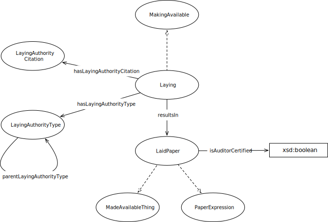

IRI: http://parliament.uk/ontologies/laying/LaidPaper
IRI: http://parliament.uk/ontologies/laying/Laying
IRI: http://parliament.uk/ontologies/laying/LayingAuthority
IRI: http://parliament.uk/ontologies/laying/LayingAuthorityType
IRI: http://parliament.uk/ontologies/laying/MadeAvailableThing
IRI: http://parliament.uk/ontologies/laying/MakingAvailable
IRI: http://parliament.uk/ontologies/laying/hasLayingAuthority
IRI: http://parliament.uk/ontologies/laying/hasLayingAuthorityType
IRI: http://parliament.uk/ontologies/laying/parentLayingAuthorityType
IRI: http://parliament.uk/ontologies/laying/resultsIn
IRI: http://parliament.uk/ontologies/laying/isAuditorCertified
This HTML document was obtained by processing the OWL ontology source code through LODE, Live OWL Documentation Environment, developed by Silvio Peroni.